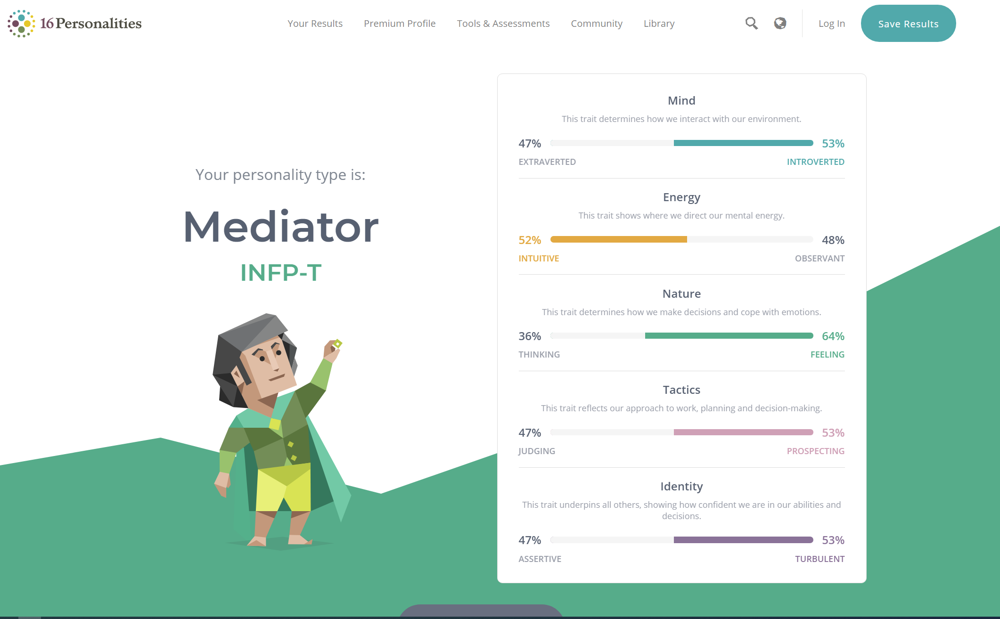
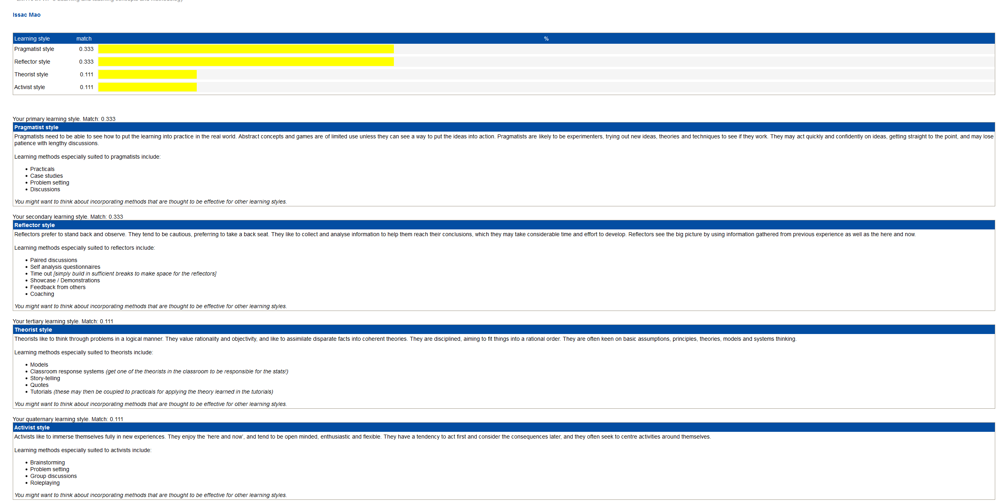
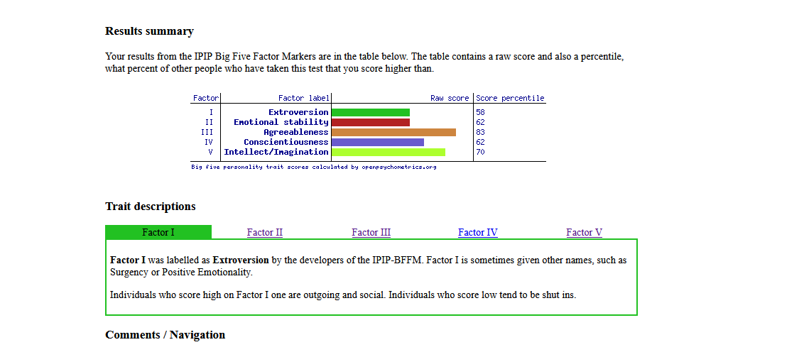

First Test

Second Test

Third Test

My thoughts about the test
These three test are quite accurate for my personalities. In the First test of leadership, I got my result of mediator which is fitting in my real life. I would like to see everybody happily work, study and cooperate with each other for a common goal, the unnecessary conflicts will leads to the loses of everyone. In reality, I like making friends during the group work, it is one of the best way to see a person’s personalities and abilities also the groups provide us more chances to communicate. However even though I like to communicate with people I’m still not want to lead others. The first reason is that I don’t want to command others it is better for me to work with people in an equal relation. The second reason is I don’t have the confidence to manage the group by myself, it is hard for me to satisfy all the wills of every group member. Instead of being a leader of the team, I rather be a member to give advices. In future group work there will be a lot of chances for me to study leadership and how to communicate with different kinds of personalities.
The second test told me about my learning style, every time I dealing with new stuffs I would like to give a try, I think practice is a best way of learning new things. During the group work, I would like to work with my group member rather than just discuss and doing nothing, the difficulties will be solve during our practices. I also like to reflect on things, it can be the project I’m doing or the relationship between me and my team members. To summarize the works we’ve done will be useful for planning the further schedule, reflect on the things I’ve said, did and others reaction will help me prove my friendships.
The third test indicate that I’m a perceptual person, In the future job I choose to be a maker of video games than be a normal programmer because I love create new things and express my thoughts. To fix and repair the software and application seems too bored for me. However the test told me that I have a poor emotional stability which will be a drawback in further cooperation with team members. I think I will practice my abilities of control my emotion and keep other comfortable while they working with me.